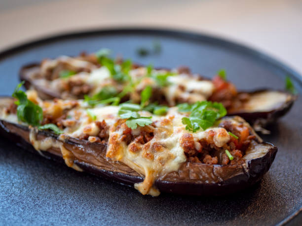

Stuffed Aubergine

Description
A delicious and warming dish, perfect for a chilly autumn
evening.
Ingredients
- 2 aubergines
- 2 tbsp olive oil, plus extra for drizzling
- 1 large onion, finely chopped
- 4 garlic cloves, finely chopped
- 12 cherry tomatoes, halved
- 50g pitted green olives, chopped
- handful basil leaves, chopped
- 125g ball vegetarian mozzarella, torn into bite-size pieces
- handful fresh white breadcrumbs
Steps
- Heat oven to 220C/200C fan/gas 7. Slice the aubergines in half lengthways, leaving the stem intact. Using a small knife, cut a border inside each aubergine about ½-1cm thick. Using a teaspoon, scoop out the aubergine flesh, so that you have 4 shells. Brush these with a little of the oil, season and place in a baking dish. Cover with foil and bake for 20 mins. Chop the flesh and place to one side.
- Meanwhile, add the remaining oil to a non-stick frying pan. Tip in the onion and cook until soft. Add the chopped aubergine flesh and cook through. Tip in the garlic and tomatoes and cook for 3 mins more. Stir in olives, basil, mozzarella and seasoning.
- When the aubergine shells are tender, remove from the oven and reduce heat to 200C/180C fan/gas 6. Pile stuffing into shells, sprinkle with breadcrumbs and drizzle with a little more oil. Bake for 15-20 mins, until the cheese is gooey and the breadcrumbs are golden. Serve with a green salad.
- Enjoy!